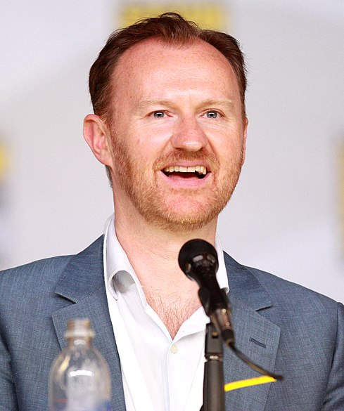
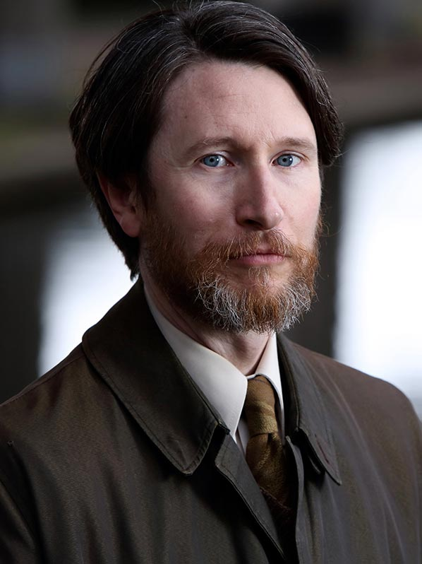
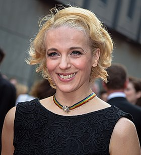

RawScene
- Home
- Series
- Movies
- Popular
- Trends
- About
Sign In
 |
||
| Benedict Cumberbatch | Andrew Scott | Martin Freeman |
 |
 |
|
| Una Stubbs | Louise Brealey | Lara Pulver |
|  | ||
| Mark Gatiss | Shay Mitchell | Sian Brooke |
|  |  | |
| Jonathan Aris | Amanda Abbington | Yasmeen Akram |
 S1E1
S1E1
Invalided home from the war in Afghanistan, Dr. John Watson becomes roommates with the world's only "consulting detective," Sherlock Holmes. Within a day their friendship is forged and several murders are solved.
 S1E2
S1E2
Mysterious symbols and murders are showing up all over London,
leading Sherlock and John to a secret Chinese crime syndicate called Black Lotus.
 S1E3
S1E3
Mycroft needs Sherlock's help, but a remorseless criminal mastermind puts Sherlock on a distracting crime-solving spree via a series of hostage human bombs through which he speaks.
 S2E1
S2E1
Sherlock must confiscate something of importance from a mysterious woman named Irene Adler.
 S2E2
S2E2
Sherlock and John investigate the ghosts of a young man who has been seeing monstrous hounds out in the woods where his father died.
 S2E3
S2E3
Jim Moriarty hatches a mad scheme to turn the whole city against Sherlock.
 S3E0
S3E0
John and Lestrade try to move on with their lives after Sherlock's apparent death. However, Anderson believes he is still alive.
 S3E1
S3E1
Mycroft calls Sherlock back to London to investigate an underground terrorist organization.
 S3E2
S3E2
Sherlock tries to give the perfect best man speech at John's wedding when he suddenly realizes a murder is about to take place.
 S3E3
S3E3
Sherlock goes up against Charles Augustus Magnussen, media tycoon and a notorious blackmailer.
 S4E0
S4E0
Sherlock Holmes and Dr. Watson find themselves in 1890s London in this Christmas special.
 S4E1
S4E1
Sherlock takes on the case of finding out who is going around and smashing six unique head statues of late Prime Minister Margaret Thatcher.
 S4E2
S4E2
Sherlock goes up against the powerful and seemingly unassailable Culverton Smith - a man with a very dark secret indeed.
 S4E3
S4E3
A dark secret in the Holmes family rears its head with a vengeance, putting Sherlock and friends through a series of sick, manipulative psychological and potentially fatal games.


.jpg)